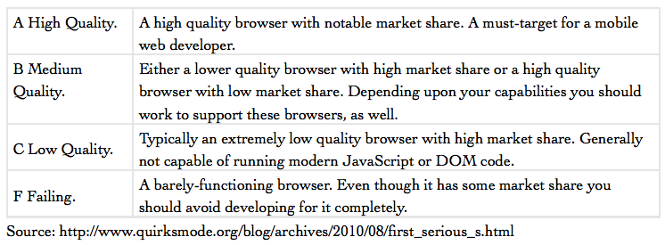
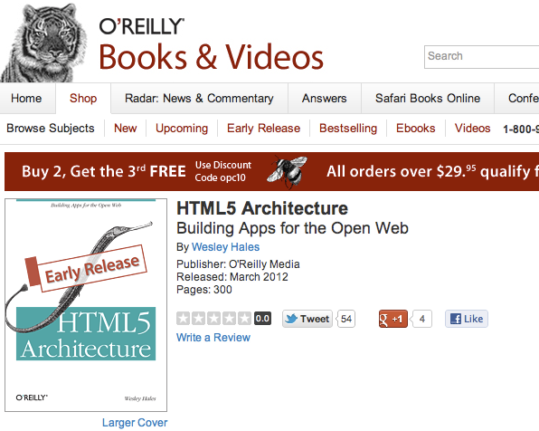

This is cool!!
What's under the hood?
- Java EE app server (JBoss AS7)
- Embedded Jetty WebSoket Server
- Custom HTML5/JavaScript

Java EE app server (JBoss AS7)
- Using the CDI programming model (Context and Dependency Injection)
- RESTful endpoints
Embedded Jetty WebSocket Server
- Support ws and wss
Custom HTML5/JavaScript
- Heavy utilization of JavaScript events over websockets
Awww... You no likey? :(
That was a short talk! Thanks!
HTML5 (aka The Open Web)
One billion HTML5-capable phones in 2013
Mobile First!
Constrained devices produce fluid/flexible content
New business opportunities (geolocation, accelerometer, AR, etc...)
CSS3 Hardware acceleration and battery life

OK! Let's go!
Devices/Browsers
What's Supported?
Fragmentation is a beach

WebKit
...is not the mobile web!
- Mobile Safari
- Android
- many others...
Mobile Firefox
- HTML5 impl #1
- B2G and WebAPIs
- http://html5test.com

Opera Mobile
- Opera Mini
- Opera Mobile, WAT?
IE Mobile
based on IE9...move along...
Market Share
- WebKit leads with over 75%
- Opera Mini is second with 13%
- Mozilla is coming...
HTML5 Enterprise (HTML5E.org)

Browser Grading
Sorry, You loose...

Mobile Frameworks
One billion HTML5/JavaScript frameworks by 2013
Mobile Browsers are Cutting Edge
- document.querySelectorAll('#find-my-node')
- Newer JavaScript impls
Old Browser Bloat
Single Page
- jQuery Mobile
- JQTouch

No Page Structure
- xui + Zepto
Programatically Created UI
- Sencha Touch
- Wink Toolkit
- The-M-Project
QA and Device Testing
http://www.mobilexweb.com/emulators

Weinre
Much like FireBug or WebKit's Web Inspector
- Works on Android, PhoneGap, iOS, BlackBerry, and webOS
Just Use WebKit/Chrome/Safari
WAT?!? It works to an extent
Debugging with Chrome
defaults write com.apple.Safari IncludeInternalDebugMenu 1
WAT!!!!!
Thank You!!!
@wesleyhales
wesleyhales.com
